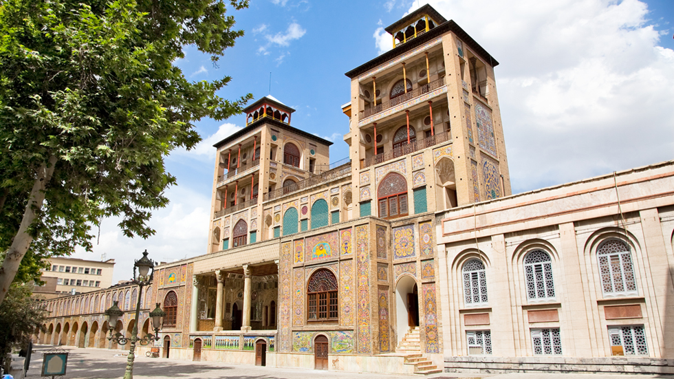
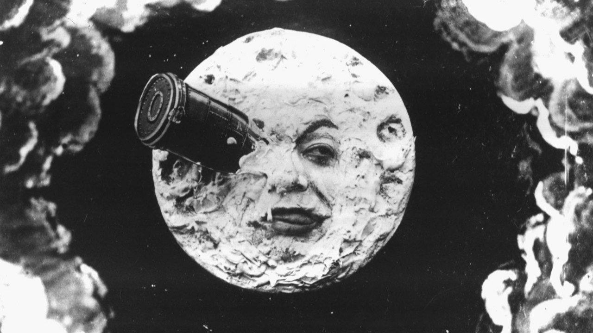
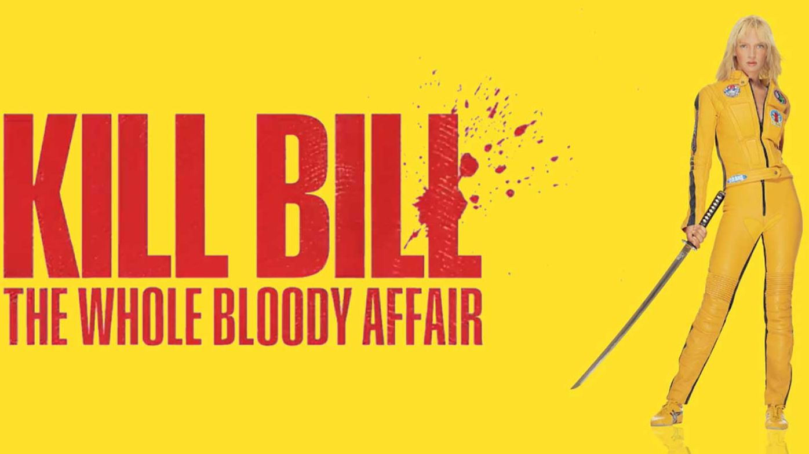
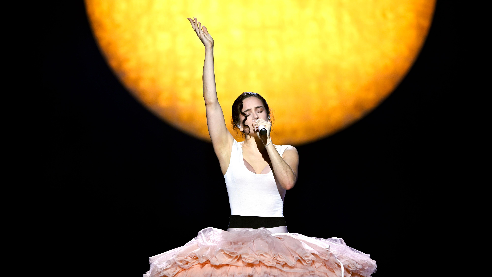
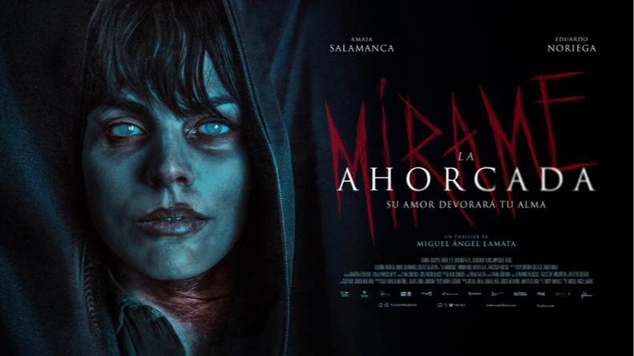
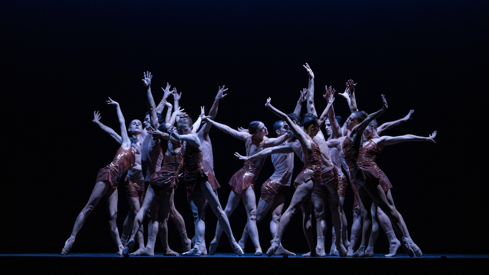
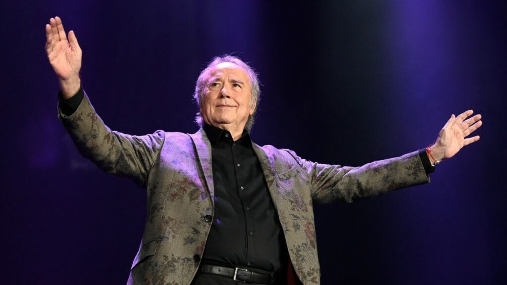
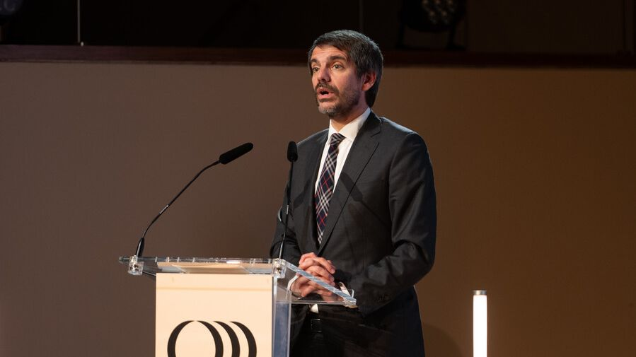

Texto
Artículos
Selección de piezas publicadas en RTVE sobre internacional, cultura y actualidad.
01
Internacional

La guerra por la memoria: patrimonio entre Irán y Líbano
Leer en RTVE02
Cultura

Las mejores películas de cine sobre viajes a la Luna
Leer en RTVE
The Whole Bloody Affair: la versión original de Kill Bill
Leer en RTVE
El Lux Tour llega a España: cómo serán los ocho conciertos de Rosalía
Leer en RTVE
Ahorcada: thriller español de terror, amor, culpa y fantasmas
Leer en RTVE
España baila para celebrar el Día Internacional de la Danza
Leer en RTVE03
Actualidad

Joan Manuel Serrat, primer Premio de Honor de la Academia de la Música de España
Leer en RTVE